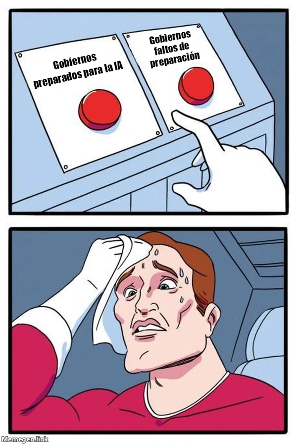

estrategIA #2 ·
Gobiernos ante dos botones
El contexto
El número defendía que los gobiernos necesitan conocimientos y personal preparado para decidir sobre la IA. El personaje duda entre dos botones aunque las etiquetas parecen ofrecer una elección obvia: estar preparado o afrontar los cambios sin esa preparación.
Publicado en: estrategIA #2 - IA, la Encrucijada Política
Leer el texto de la imagen
Gobiernos preparados para la IA Gobiernos faltos de preparación
Marca de la herramienta visible en el original: Memegen.link.